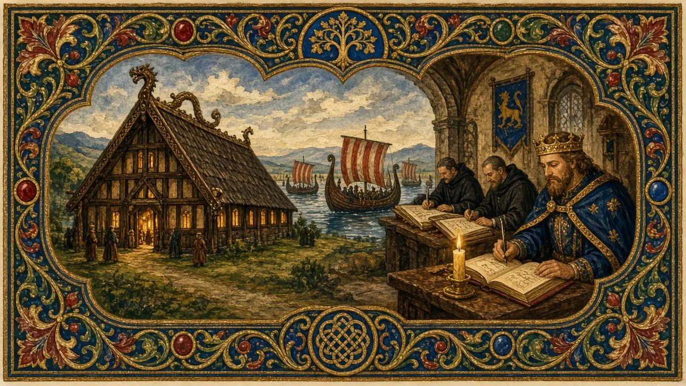
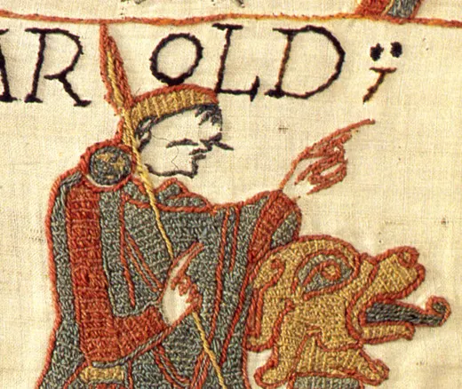

Harold II
Nine months, two invasions, two battles — and an arrow at Hastings.
England · Reigned 1066 · Stop 16 of the odyssey
← Learning from the Past: An English Odyssey · ← Edward the Confessor · William the Conqueror →

- What do you know about 1066?
- Can one day change a whole country's future?
- How do you make decisions when everything happens at once?
The words for today's story
Each new word is hidden in a sentence. Read it aloud and say what you think the bold word means from the rest of the sentence — then reveal it and see how close you were.
Now use them — out loud
- Using any four of these words, predict: what kind of reign do you think this will be — and how might it end?
- Which words belong to power and which to danger? Sort them out loud and say why.


The story, in three parts
Read each part. After it, there's a quick comprehension check (try the questions from memory first), then one thing to discuss.
Part 1 — A crown and two enemies
Harold Godwinson, Earl of Wessex, was crowned on 6 January 1066. The Bayeux Tapestry says he had earlier sworn an oath to William of Normandy; English sources say little about this.
Two enemies prepared to invade: William of Normandy in the south, and King Harald Hardrada of Norway, joined by Harold's exiled brother Tostig, in the north.
1. When was Harold crowned?
2. Who were his two enemies?
1. 6 January 1066.
2. William of Normandy and Harald Hardrada of Norway (with Tostig).
- How would you plan for two enemies at once?
Part 2 — Stamford Bridge
Harold waited all summer for William on the south coast, but the wind kept the Normans in port. In September his army went home. Then Hardrada landed in the north, defeated the northern earls at Fulford, and took York.
Harold marched north remarkably fast and on 25 September destroyed the Norwegian army at Stamford Bridge. Hardrada and Tostig were killed.
1. Why did William not arrive in the summer?
2. What happened at Stamford Bridge?
1. The wind kept his fleet in port.
2. Harold destroyed the Norwegian army; Hardrada and Tostig died.
- Was Harold lucky or skilful at Stamford Bridge?
Part 3 — Hastings
Three days later, William landed at Pevensey. Harold rushed south and, on 14 October, formed a shield wall on a ridge near Hastings. The battle lasted most of the day. The Normans may have used feigned retreats to draw English soldiers out of the line.
Harold was killed. The Bayeux Tapestry shows a figure with an arrow in or near his eye, but historians debate whether that figure is Harold, and how he died. England had a new conqueror.
1. Where did the English stand at Hastings?
2. What is debated about Harold's death?
1. On a ridge, in a shield wall.
2. Whether he really died from an arrow in the eye; the Tapestry is unclear.
- Should Harold have waited longer before fighting William?
Grammar — Third Conditional — What If?
History invites the great question: what if? The third conditional imagines a different past and its different result.
• Form: If + past perfect, would have + past participle.
• "If the wind had changed a day earlier, William would have landed first."
• Use might have / could have for less certainty.
1. Complete the conditional
Complete each sentence about Harold II. Use the word in brackets.
1. If the wind (change) earlier, William (land) while Harold was waiting.
2. If Hardrada (not / invade), Harold's army (be) fresher.
3. If Harold (wait) for more troops, he (might / win).
1. had changed … would have landed
2. had not invaded … would have been
3. had waited … might have won
2. Mixed practice — what if?
1. If the English (not / break) the line, they (could / hold) the hill.
2. If Harold (survive), England (might / stay) Anglo-Saxon.
3. If William (lose), the English language (be) very different today.
1. had not broken … could have held
2. had survived … might have stayed
3. had lost … would have been
Hold on to this — you'll need it in the Speak tab.
Going deeper
1066 is a story of timing. Harold's speed won one battle and perhaps lost the next. The Norman Conquest changed England's language, landowners, buildings and laws — but its outcome was far from certain on the morning of 14 October.
- Was Harold's defeat inevitable?
- How did one day change English?
- When has rushing cost you?

Stop 16 on the journey → dish. In the Major System Palace, 16 is spelled with the sounds d-sh, which make dish (a round blue serving dish).
Picture a china dish cracked by a Norman arrow, lying on the field of Hastings — stop 16, the end of Saxon England.
You don't need the system to follow the story — it's simply a hook that lets you walk the whole odyssey, king by king, in order.
Speak
This is the heart of the lesson — do all of it out loud. The timer is there to keep you going: fill the time with detail rather than escaping it.
Tell the story of Harold II in your own words, as if to someone who has never heard of them. Move through the arc: the coronation and two threats → waiting in the south → Stamford Bridge → Hastings.
Use today's grammar at least three times, and work in at least five key words (oath, forfeit, march, exhausted, shield wall, feign, pursue, tapestry, slay, turning point).
"Harold lost because he was too quick." Argue for or against.
Tell a story from your own world — work, family, the news — that echoes this reign. Stuck for an idea? Pick one of these and run with it:
- Two crises at once.
- A decision made in a hurry.
- A close contest that changed everything.
- A picture that tells only one side.
To finish — the bigger questions
- What would England be like if Harold had won?
- What is your next "Hastings" — and are you ready?
- Before you go — from memory: give two sentences about Harold II using Third Conditional — What If?, and say what lesson from this reign you could use this week.
← Learning from the Past: An English Odyssey · ← Edward the Confessor · William the Conqueror →